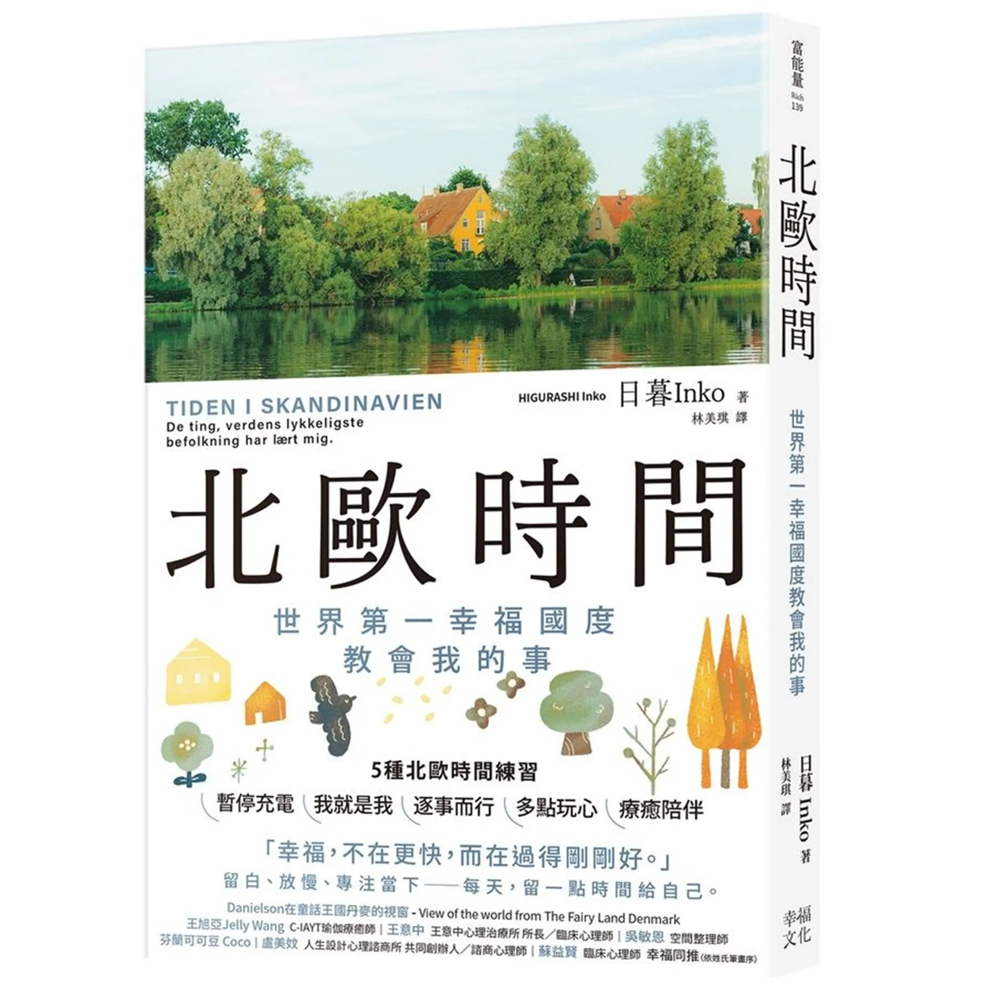

點擊封面，探索書本的另一面
點擊下方書本封面，圖片將會優雅地旋轉 180 度，顯示出書本的詳細資訊。

心理勵志 / 人際關係
絕交不可惜，把善良留給對的人
精神科醫師日記．威廉
「善良需要帶點鋒芒，溫柔需要帶點原則。」

商業思維 / 財富自由
納瓦爾寶典
艾瑞克．喬根森 編著
「財富是即使你在睡覺，也能賺錢的資產。」

個人成長 / 高效能
原子習慣
詹姆斯．克利爾
「每天進步 1%，一年後將強大 37 倍。」
金融投資 / 價值投資
投資最重要的事
霍華．馬克斯
「成功的投資需要第二層思考。」

金融投資 / 財務規劃
持續買進
尼克．馬朱利
「以數據驅動投資決策，而非直覺。」

生活哲學 / 幸福學
北歐時間
日暮 Inko
「幸福，不在於更快，而在於過得剛剛好。」